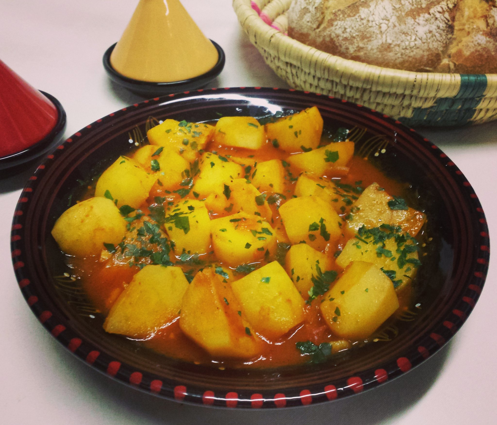

Chtitha Batata (Algerian Potato Stew)

Description
This authentic Algerian potato stew is made with dersa, a spicy chile and garlic paste. It's delicious on its own
as a vegan or vegetarian main, or served as a side to meat or fish. An easy way to enjoy North African cuisine
at home with easy-to-find ingredients!
ingredients
- Dersa:
- 4 cloves garlic, peeled and halved
- 1 small fresh red chile pepper, seeded and chopped
- 1 teaspoon ground cumin
- 1 teaspoon paprika
- ½ teaspoon black pepper
- ½ teaspoon cayenne pepper
- ½ teaspoon salt
- 2 tablespoons olive oil
- Stew:
- 1 ½ pounds new potatoes, halved
- 1 tablespoon tomato paste
- water to cover
- salt to taste
-
Directions
- Step 1
Combine garlic, chile pepper, cumin, paprika, black pepper, cayenne, and salt in a mortar; grind
with a
pestle until it forms a paste. Add olive oil and mix dersa well.
- Step 2
Heat a large saucepan over medium heat and stir-fry dersa until fragrant, 2 to 4 minutes. Add potato
halves
and stir to combine with the dersa. Stir in tomato paste. Pour in enough water to just cover the
potatoes
and bring to a boil. Reduce heat and simmer until potatoes are tender, about 40 minutes.
- Step 3
Ladle potatoes into a serving bowl. Spoon any remaining sauce over the potatoes.